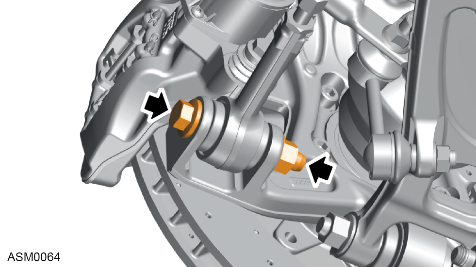
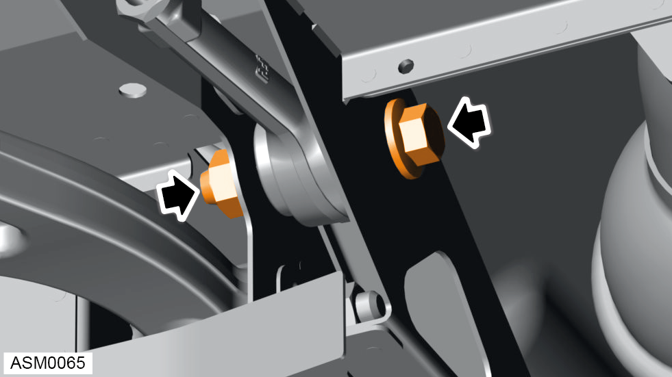
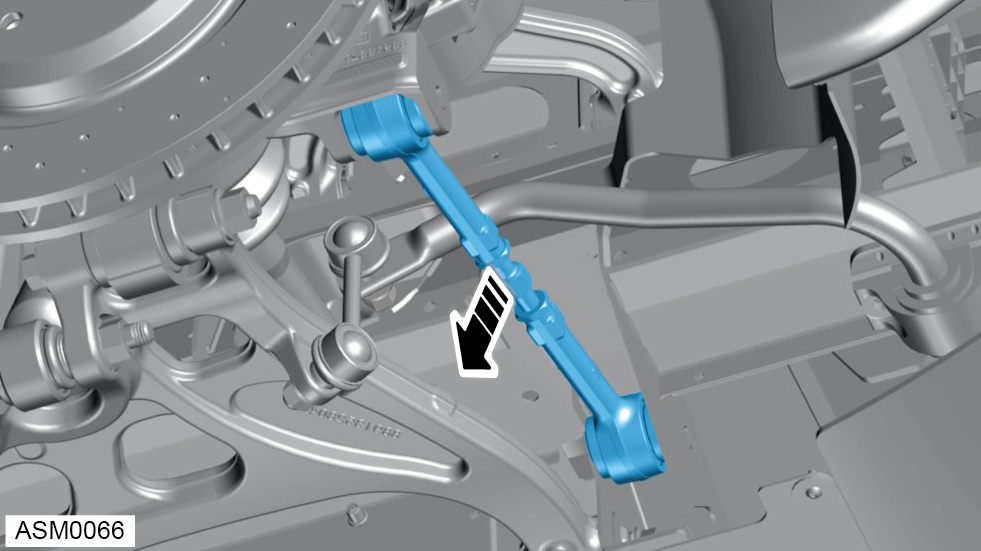

Toe Arm Assembly - Rear
Print
Operation Code: 31.03.20-02
Removal
- Remove rear undertray. Refer to procedure.
- Remove rear wheel. Refer to procedure.

- Remove M14x90 bolt and M14 nut securing toe arm to hub. Discard nut. Torque 135 Nm.

- Remove M14x75 bolt and M14 nut securing toe arm to vehicle. Discard nut. Torque 135 Nm.

- Remove toe arm.
Installation
- Installation is the reverse of removal procedure except for the following:
- Renew discarded nuts.
- Ensure left handed threaded link of rear toe arm is is fitted inboard of rear subframe.
- Refit inner and outer link joint bolts in correct orientation.
NOTE: The bolt head should face the rear of the vehicle.
- Only torque tighten toe arm bolts once vehicle is in the normal ride height position.
- If renewing toe arm assembly, perform a rear suspension geometry inspection and adjustment. Refer to procedure.